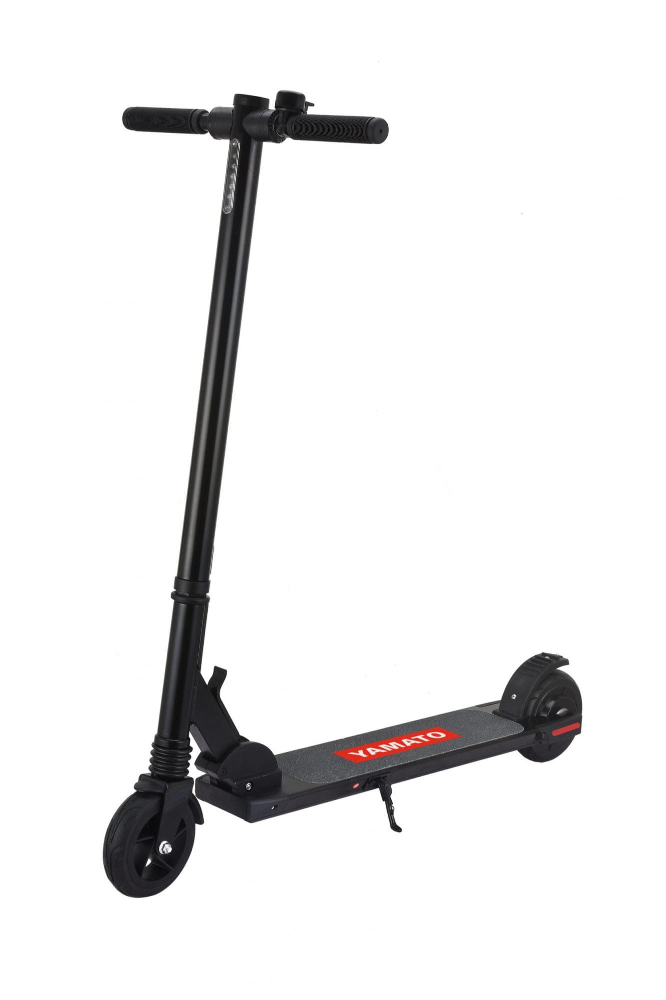
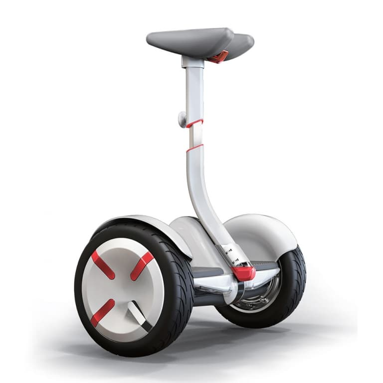
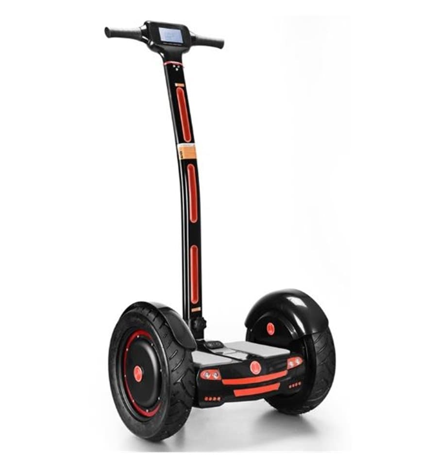

Электросамокат - современный вариант простого самоката. Для того чтобы на нем кататься, нужно всего один раз оттолкнуться ногой от земли, обеспечив стартовое ускорение. Дальше устройство будет везти хозяина самостоятельно за счет встроенного электромотора. Если выбирать между моноколесом или электросамокатом, последний будет гораздо безопаснее в эксплуатации за счет наличия 2 колес (т.е. 2 точек опоры) и ручки для опоры руками.
Гироскутер представляет собой конструкцию из 2 колес, расположенных по бокам от наездника и соединенных поперечной планкой-корпусом. Внутри корпуса располагаются электродвигатели, аккумуляторные батареи и гироскопы, поддерживающие в горизонтальном положении площадку для ног. Гироскутеры никогда не оснащаются рукоятками для рук. Устройства из 2 колес, поперечной площадки и рулевого столба называются сигвеями и управляются манипуляциями руками. Особенность управления гироскутером состоит в том, что для движения вперед наезднику необходимо наклониться вперед. Для торможения или движения назад - наклониться назад. Для поворота нужно наклонять корпус в правую или левую сторону.
Сигвей - средство передвижения для одного человека, которое держит равновесие с помощью специальной автобалансирующей системы. Это своеобразный электрический скутер, самостоятельно удерживающий равновесие. Сигвеи бесшумны в работе, не загрязняют окружающую среду, работают на электрической энергии, накопленной батареей аккумуляторов.
15900₽
8990₽

14900₽

15990₽
18900₽

22900₽

39900₽
Квалифицированный специалист сервисного центра My Gyro
Старший консультант My Gyro
Менеджер-консультант My Gyro